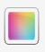
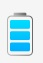
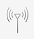
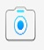
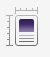

 Layar
Resolusi
Resolusi VGA 640 x 480, pada 287 ppi
Warna 24-bit
Ukuran Layar
2.8" diagonal
Memori
RAM 768MB, eMMC 8 GB
Memori Tambahan
MicroSD HC yang Mudah Diganti hingga 32 GB
Multimedia
Format Gambar
.bmp, .jpg, .gif, .png, .tif, .wbmp
Format Audio dan Video
.mp4, .m4a, .3gp, .m4v, .avi, .asf, ,wmv, .wma, .mp3, .flac, .ogg, .aac, .amr, .wav, .mid,
 Daya
Baterai
Baterai lithium ion 1230 mAh yang dapat dilepas/diisi daya ulang
Masa Pakai Baterai
Waktu bicara hingga 5.5 jam (GSM), hingga 6.6 jam (UMTS)
Waktu siaga hingga 8.9 hari (GSM), hingga 13.1 hari (UMTS)
Waktu pemutaran audio hingga 48 jam
Waktu pemutaran video hingga 8.08 jam
 Konektivitas dan Jaringan
Port USB
Port USB 2.0 kecepatan tinggi memungkinkan pengisian daya dan sinkronisasi data perangkat lewat kabel USB
Wi-Fi®
802.11 2 GHz b/g/n, 5GHz a/n
 Kamera dan Video
♦ Kamera 5 MP
♦ Perekaman video HD (720p)
♦ Zoom digital 4x
♦ Lampu kilat
♦ Deteksi wajah dan stabilisasi gambar
♦ Penandaan geografis
♦ Mode pemandangan
 OS & Dekstop Software
OS & Dekstop Software
Sistem Operasi
BlackBerry 7 OS version 7.1
Perangkat Lunak Dekstop
BlackBerry® Desktop Software (termasuk BlackBerry® Media Sync untuk mentransfer musik, foto, video)
Performa
Processor
MSM 8655, 1.2GHz
 Desain
Ukuran
Tinggi 115 mm/4,53 inci
Lebar 67 mm/2,64 inci
Tebal 11,3 mm/0,44 inci
Berat 155 gr/5,47 ons
Navigasi dan Keyboard
Layar sentuh, bidang sentuh optik, dan keypad QWERTY lebar 35 tombol dengan lampu latar
Tombol khusus
Kirim, Putus (Daya), Menu, Keluar, Kamera (tombol praktis, dapat disesuaikan pengguna), Volume Naik/Turun (Maju/Mundur untuk media, Zoom untuk kamera), Diam (Putar/Jeda untuk media), Kunci (atas tengah)
.jpg)
.jpg)